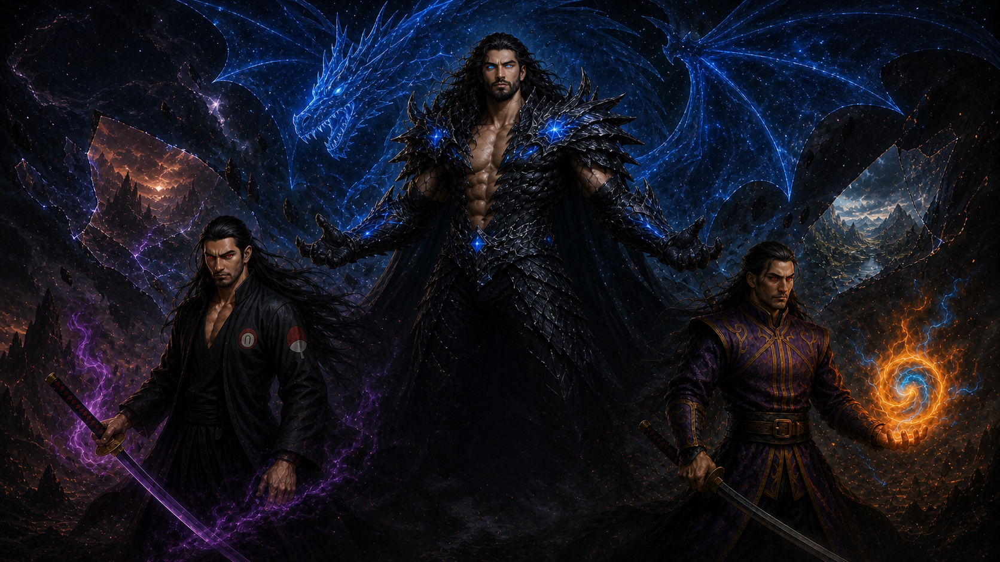
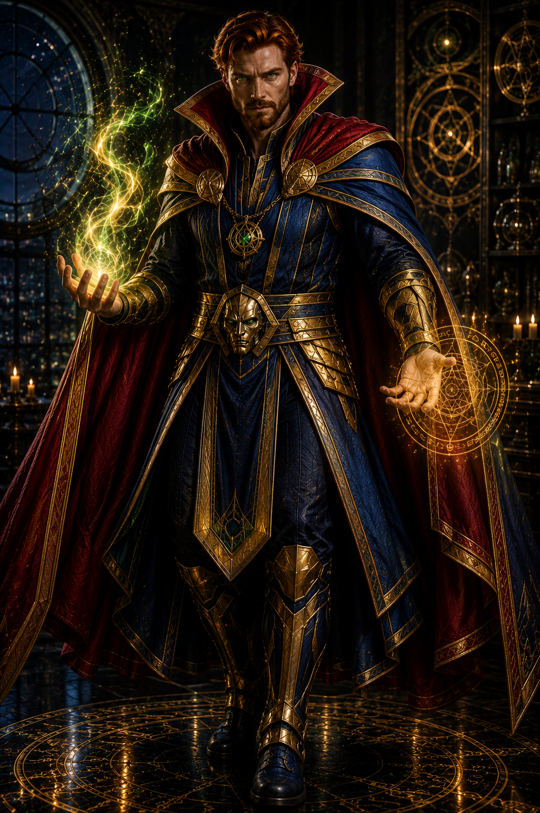

Arquivo dos Destinos
A realidade termina aqui.
Além deste limiar, heróis, deuses e mundos impossíveis escrevem juntos uma única história.


A realidade se rompe. Escolha seu destino.
Guardiões do DestinoCinco mundos aguardam
Dr. Connor · Feiticeira EscarlateMundo Kaizen
Passe pelo portal ou use as setas para escolherEntre hospitais e maldições, medicina e magia defendem o mesmo mundo.